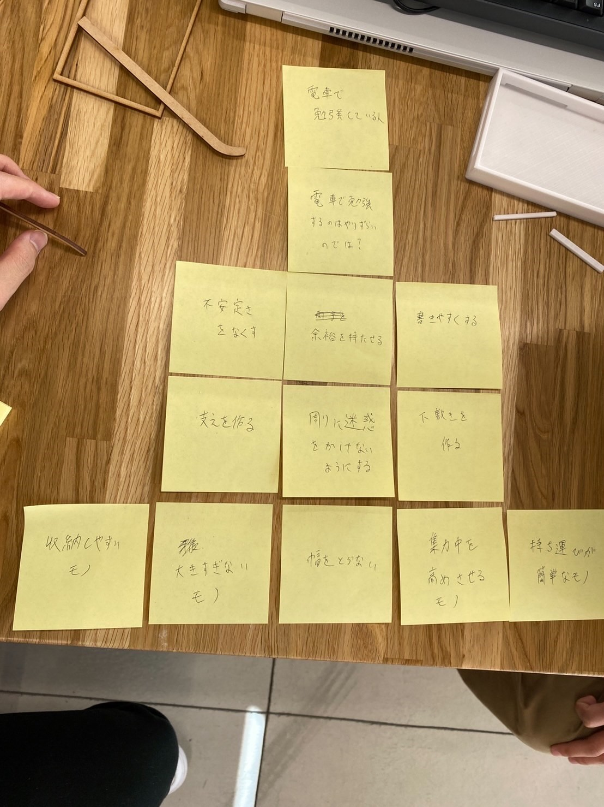
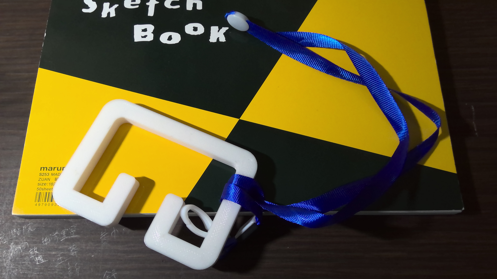

1.グループでピックアップした対象に関する説明
私たちのグループは電車で勉強している人を対象にしました。
電車で勉強することはとても難しそうだった。
2.POVとその説明
3.HMWの画像

4.構想段階のスケッチ
5.プロトタイピング

これは電車で両手を離してても安定して立つことができるモノです。
普通、電車で立つときはつり革をもつため、空いているのはつり革を握っていない方の手だけです。
また、両手を離しながら立てる人もいますが、それだとたくさん揺れる電車ではバランスを取ることに意識を取られ、勉強に集中できないと思いました。
そのため、支えを作り、両手を空けることで、安定して勉強することができるのではないかと考えました。
6.設計ファイル